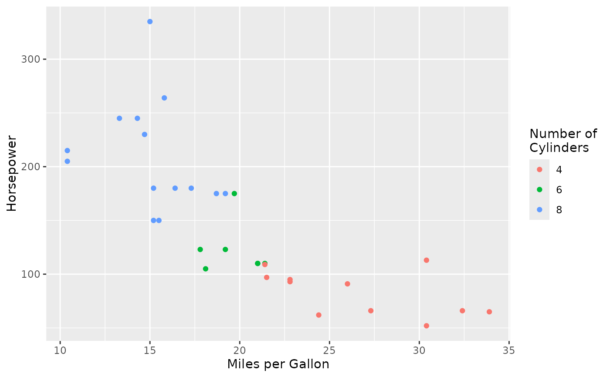

Use Nicknames in ggplot2 Plots
labs_nn.RdThis function provides a convenient way to apply human readable labels to
ggplot2 plots, by first registering them using nn_register and
then applying them using this function.
See also
labs_map for direct remapping
Examples
library(ggplot2)
# Register nicknames
nn_register(c(
"mpg" = "Miles per Gallon",
"hp" = "Horsepower",
"factor(cyl)" = "Number of\nCylinders"
))
# Create plot and apply nickname labels
ggplot(mtcars, aes(x = mpg, y = hp, color = factor(cyl))) +
geom_point() +
labs_nn()
